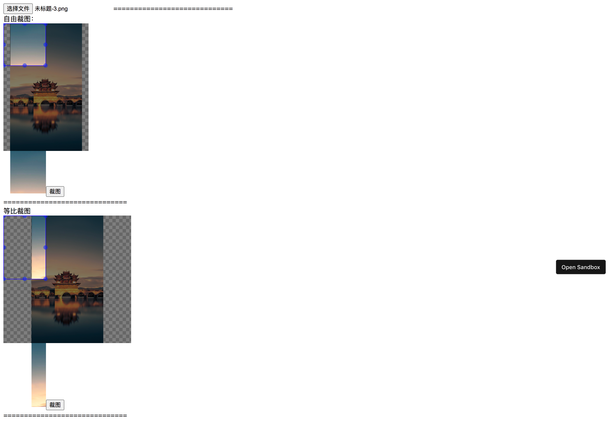

# 自己实现的【在线裁图】组件
https://github.com/zhicheng99/qcut.git

app.vue
<template>
<div id="app">
<input
id="file"
type="file"
@change="addImg"
accept="image/png,image/jpeg,image/gif,image/jpg"
/>
=============================
<br />自由裁图：
<div style="width: 200px; height: 300px">
<qcut ref="qcut1" v-bind:file-obj="file" />
</div>
<span id="qcut1"></span>
<button @click="cut1">裁图</button><br />
============================== <br />
等比裁图
<div style="width: 300px; height: 300px">
<qcut
ref="qcut2"
v-bind:is-fixed="fixed"
v-bind:fixed-ratio="ratio"
v-bind:file-obj="file"
/>
</div>
<span id="qcut2"></span>
<button @click="cut2">裁图</button><br />
============================== <br />
</div>
</template>
<script>
import qcut from "./components/qcut";
export default {
name: "App",
components: {
qcut,
},
data() {
return {
fixed: true,
file: null,
ratio: [2, 3],
};
},
methods: {
addImg: function (e) {
this.file = e.target.files[0];
},
cut1: function () {
document.getElementById("qcut1").innerHTML =
'<img src="' + this.$refs.qcut1.getCropData() + '" />';
},
cut2: function () {
document.getElementById("qcut2").innerHTML =
'<img src="' + this.$refs.qcut2.getCropData() + '" />';
},
},
};
</script>
<style>
</style>
qcut.vue
<template>
<!-- <div> -->
<div class="cropper" ref="cropper">
<div
class="bg"
v-if="base64 != ''"
:style="{
width: bg_width + 'px',
height: bg_height + 'px',
transform:
'scale(' +
scaleX +
',' +
scaleY +
') translate3d(' +
translateX / scaleBase +
'px,' +
translateY / scaleBase +
'px,0px)',
}"
>
<img :src="base64" ref="cut_img" />
</div>
<div class="cropper-drag cropper-move" id="cropper-drag"></div>
<div
class="cut_cover"
id="cut_cover"
ref="cut_cover"
v-bind:style="{
width: cut_width + 'px',
height: cut_height + 'px',
left: cut_translateX + 'px',
top: cut_translateY + 'px',
}"
>
<div class="img_cover">
<div
class="front"
v-if="base64 != ''"
ref="front"
:style="{
width: bg_width + 'px',
height: bg_height + 'px',
transform:
'scale(' +
scaleX +
',' +
scaleY +
') translate3d(' +
frontX / scaleBase +
'px,' +
frontY / scaleBase +
'px,0px)',
}"
>
<img :src="base64" ref="front_img" />
</div>
</div>
<div id="tip">{{ cut_width | format }}x{{ cut_height | format }}</div>
<template v-if="!cut_moving">
<span id="point1" class="point"></span>
<span id="point2" class="point"></span>
<span id="point3" class="point"></span>
<span id="point4" class="point"></span>
<span id="point5" class="point"></span>
<span id="point6" class="point"></span>
<span id="point7" class="point"></span>
<span id="point8" class="point"></span>
</template>
</div>
</div>
<!-- <input
id="file"
type="file"
@change="addImg"
accept="image/png,image/jpeg,image/gif,image/jpg"
/>
<button @click="cut4">截图</button>
</div>-->
</template>
<script>
var Event = {};
Event.addEvents = function (target, eventType, handle) {
if (target.addEventListener) {
Event.addEvents = function (target, eventType, handle) {
target.addEventListener(eventType, handle, false);
};
} else {
Event.addEvents = function (target, eventType, handle) {
target.attachEvent("on" + eventType, function () {
handle.call(target, arguments);
});
};
}
Event.addEvents(target, eventType, handle);
};
export default {
props: ["isFixed", "fixedRatio", "fileObj"],
data() {
return {
base64: "",
cropper_width: 0,
cropper_height: 0,
img_width: 0,
img_height: 0,
bg_width: 0,
bg_height: 0,
old_bg_width: 0,
old_bg_height: 0,
disX: 0,
disY: 0,
translateX: 0,
translateY: 0,
init_translateX: -1,
init_translateY: -1,
init_centerX: -1,
init_centerY: -1,
scaleBase: 1,
scaleX: 1,
scaleY: 1,
drag: null,
cut_width: 100,
cut_height: 100,
fixed: false, // 是否开启截图框宽高固定比例
fixedNumber: [3, 4], // 截图框的宽高比例
fixedRate: 0,
old_cut_width: 100,
old_cut_height: 100,
cut_translateX: 0,
cut_translateY: 0,
cut_maxLeft: 0,
cut_maxTop: 0,
cut_moving: false, //裁剪框是否正在移动
};
},
filters: {
format: function (v) {
return parseInt(v);
},
},
methods: {
init_cut: function () {
if (this.fixed) {
this.fixedRate = this.fixedNumber[0] / this.fixedNumber[1];
//以宽度为准 重新计算高
this.cut_height = this.cut_width / this.fixedRate;
}
},
limitRange: function () {
//裁剪框限制在划动区域内
this.cut_maxLeft = this.cropper_width - this.cut_width;
this.cut_maxTop = this.cropper_height - this.cut_height;
},
getPosition: function (event) {
var e = event || window.event;
var scrollX =
document.documentElement.scrollLeft || document.body.scrollLeft;
var scrollY =
document.documentElement.scrollTop || document.body.scrollTop;
var x = e.pageX || e.clientX + scrollX;
var y = e.pageY || e.clientY + scrollY;
return {
x: x,
y: y,
};
},
initEvent: function () {
var _this = this;
Event.addEvents(this.$refs.cropper, "mousewheel", function (event) {
var delta = 0;
if (!event) event = window.event;
if (event.wheelDelta) {
//IE、chrome浏览器使用的是wheelDelta，并且值为“正负120”
delta = event.wheelDelta / 120;
if (window.opera) delta = -delta; //因为IE、chrome等向下滚动是负值，FF是正值，为了处理一致性，在此取反处理
} else if (event.detail) {
//FF浏览器使用的是detail,其值为“正负3”
delta = -event.detail / 3;
}
if (_this.base64 != "") {
if (delta < 0) {
_this.scaleBase += 0.01;
} else {
_this.scaleBase -= 0.01;
}
_this.scaleBase = _this.scaleBase <= 0 ? 0 : _this.scaleBase;
_this.scaleX = _this.scaleBase;
_this.scaleY = _this.scaleBase;
// _this.bg_width = _this.old_bg_width * _this.scaleBase;
// _this.bg_height = _this.old_bg_height * _this.scaleBase;
// console.log(_this.bg_width);
// console.log(_this.bg_height);
// _this.initBgImgPosition();
}
event.preventDefault();
});
Event.addEvents(this.$refs.cropper, "mousedown", function (event) {
var tmp = _this.getPosition(event);
var x = tmp.x,
y = tmp.y;
if (event.target.id == "cropper-drag") {
//背景图的覆盖层
_this.disX = x - _this.translateX;
_this.disY = y - _this.translateY;
} else if (event.target.className == "point") {
_this.disX = x - event.target.offsetLeft;
_this.disY = y - event.target.offsetTop;
//更新裁剪框的宽高位置记录
_this.old_cut_width = _this.$refs.cut_cover.offsetWidth;
_this.old_cut_height = _this.$refs.cut_cover.offsetHeight;
_this.old_cut_translateX = _this.$refs.cut_cover.offsetLeft;
_this.old_cut_translateY = _this.$refs.cut_cover.offsetTop;
} else {
_this.disX = x - event.target.offsetLeft;
_this.disY = y - event.target.offsetTop;
}
_this.drag = event.target;
});
Event.addEvents(this.$refs.cropper, "mousemove", function (event) {
if (_this.drag === null) {
return false;
}
var tmp = _this.getPosition(event);
var x = tmp.x,
y = tmp.y;
if (_this.drag.id == "cropper-drag") {
//在背景覆盖层滑动 移动底部图片
_this.translateX = x - _this.disX;
_this.translateY = y - _this.disY;
}
if (_this.drag.id == "cut_cover") {
//移动裁剪框
_this.cut_moving = true;
//裁剪框限制在容器内
var tmpX = x - _this.disX;
var tmpY = y - _this.disY;
tmpX =
tmpX <= 0
? 0
: tmpX >= _this.cut_maxLeft
? _this.cut_maxLeft
: tmpX;
tmpY =
tmpY <= 0 ? 0 : tmpY >= _this.cut_maxTop ? _this.cut_maxTop : tmpY;
_this.cut_translateX = tmpX;
_this.cut_translateY = tmpY;
}
if (_this.drag.id == "point1") {
//影响裁剪框宽、高、位置[x,y]
_this.cut_width = _this.old_cut_width - (x - _this.disX + 5);
// _this.cut_height = _this.old_cut_height-(y - _this.disY+5);
if (_this.fixed) {
//如果固定比例 就以宽为准 对高度做限
_this.cut_height = _this.cut_width / _this.fixedRate;
} else {
_this.cut_height = _this.old_cut_height - (y - _this.disY + 5);
}
//point块的中心点位置即为裁剪框的[x,y]
// _this.cut_translateX = _this.old_cut_translateX +(x - _this.disX + 5);
// _this.cut_translateY = _this.old_cut_translateY +(y - _this.disY + 5);
// 以上计算变形一下 以宽 高为变量做计算
_this.cut_translateX =
_this.old_cut_translateX + (_this.old_cut_width - _this.cut_width);
_this.cut_translateY =
_this.old_cut_translateY +
(_this.old_cut_height - _this.cut_height);
}
if (_this.drag.id == "point2") {
//影响裁剪框高 位置y
// _this.cut_width = _this.old_cut_width-(x - _this.disX);
_this.cut_height = _this.old_cut_height - (y - _this.disY + 5);
if (_this.fixed) {
//固定比例时 以高为准
_this.cut_width = _this.cut_height * _this.fixedRate;
}
//point块的中心点位置即为裁剪框的[x,y]
// // _this.cut_translateX = _this.old_cut_translateX +(x - _this.disX + 5);
// _this.cut_translateY = _this.old_cut_translateY +(y - _this.disY + 5);
// 以上计算变形一下 以宽 高为变量做计算
_this.cut_translateX =
_this.old_cut_translateX + (_this.old_cut_width - _this.cut_width);
_this.cut_translateY =
_this.old_cut_translateY +
(_this.old_cut_height - _this.cut_height);
}
if (_this.drag.id == "point3") {
//影响裁剪框宽、高、位置y
_this.cut_width = x - _this.disX + 5;
// _this.cut_height = _this.old_cut_height-(y - _this.disY+5);
if (_this.fixed) {
//固定比例时 以宽为准
_this.cut_height = _this.cut_width / _this.fixedRate;
} else {
_this.cut_height = _this.old_cut_height - (y - _this.disY + 5);
}
//point块的中心点位置即为裁剪框的[x,y]
// // _this.cut_translateX = _this.old_cut_translateX +(x - _this.disX + 5);
// _this.cut_translateY = _this.old_cut_translateY +(y - _this.disY + 5);
//以上计算变形一下 以宽 高为变量做计算
_this.cut_translateY =
_this.old_cut_translateY +
(_this.old_cut_height - _this.cut_height);
}
if (_this.drag.id == "point4") {
//影响裁剪框宽
_this.cut_width = x - _this.disX + 5;
// _this.cut_height = _this.old_cut_height-(y - _this.disY);
if (_this.fixed) {
//固定比例时 以宽为准
_this.cut_height = _this.cut_width / _this.fixedRate;
}
//point块的中心点位置即为裁剪框的[x,y]
// _this.cut_translateX = _this.old_cut_translateX +(x - _this.disX + 5);
// _this.cut_translateY = _this.old_cut_translateY +(y - _this.disY + 5);
//以上计算变形一下 以宽 高为变量做计算
}
if (_this.drag.id == "point5") {
//影响裁剪框宽、高
_this.cut_width = x - _this.disX + 5;
// _this.cut_height = (y - _this.disY+5);
if (_this.fixed) {
//固定比例时 以宽为准
_this.cut_height = _this.cut_width / _this.fixedRate;
} else {
_this.cut_height = y - _this.disY + 5;
}
//point块的中心点位置即为裁剪框的[x,y]
// _this.cut_translateX = _this.old_cut_translateX +(x - _this.disX + 5);
// _this.cut_translateY = _this.old_cut_translateY +(y - _this.disY + 5);
}
if (_this.drag.id == "point6") {
//影响裁剪框高
// _this.cut_width = (x - _this.disX+5);
_this.cut_height = y - _this.disY + 5;
if (_this.fixed) {
//固定比例时 以宽为准
_this.cut_width = _this.cut_height * _this.fixedRate;
}
//point块的中心点位置即为裁剪框的[x,y]
// _this.cut_translateX = _this.old_cut_translateX +(x - _this.disX + 5);
// _this.cut_translateY = _this.old_cut_translateY +(y - _this.disY + 5);
}
if (_this.drag.id == "point7") {
//影响裁剪框宽、高 位置x
_this.cut_width = _this.old_cut_width - (x - _this.disX + 5);
// _this.cut_height = (y - _this.disY+5);
if (_this.fixed) {
//固定比例时 以宽为准
_this.cut_height = _this.cut_width / _this.fixedRate;
} else {
_this.cut_height = y - _this.disY + 5;
}
//point块的中心点位置即为裁剪框的[x,y]
// _this.cut_translateX = _this.old_cut_translateX +(x - _this.disX + 5);
// // _this.cut_translateY = _this.old_cut_translateY +(y - _this.disY + 5);
//以上计算变形一下 以宽 高为变量做计算
_this.cut_translateX =
_this.old_cut_translateX + (_this.old_cut_width - _this.cut_width);
}
if (_this.drag.id == "point8") {
//影响裁剪框宽 位置x
_this.cut_width = _this.old_cut_width - (x - _this.disX + 5);
// _this.cut_height = (y - _this.disY+5);
if (_this.fixed) {
_this.cut_height = _this.cut_width / _this.fixedRate;
}
//point块的中心点位置即为裁剪框的[x,y]
// _this.cut_translateX = _this.old_cut_translateX +(x - _this.disX + 5);
// // _this.cut_translateY = _this.old_cut_translateY +(y - _this.disY + 5);
//以上计算变形一下 以宽 高为变量做计算
_this.cut_translateX =
_this.old_cut_translateX + (_this.old_cut_width - _this.cut_width);
}
});
Event.addEvents(this.$refs.cropper, "mouseup", function () {
_this.cut_moving = false;
_this.drag = null;
});
},
initBgImgPosition: function () {
//初始化背景图片位置 保证图片全部放到预览框内 居中显示
//情况一 图片宽高度都小于等于显示框的宽高 所以图片不需要缩放
if (
this.img_width <= this.cropper_width &&
this.img_height <= this.cropper_height
) {
this.bg_width = this.img_width;
this.bg_height = this.img_height;
} else {
//计算缩放比例
var cropper_rate = this.cropper_width / this.cropper_height;
var img_rate = this.img_width / this.img_height;
if (cropper_rate >= img_rate) {
//以图片高度显示全为准
this.bg_height = this.cropper_height;
this.bg_width =
this.img_width / (this.img_height / this.cropper_height);
} else {
this.bg_width = this.cropper_width;
this.bg_height =
this.img_height / (this.img_width / this.cropper_width);
}
}
if (this.old_bg_width == 0) {
this.old_bg_width = this.bg_width;
this.old_bg_height = this.bg_height;
}
this.translateX = (this.cropper_width - this.bg_width) * 0.5;
this.translateY = (this.cropper_height - this.bg_height) * 0.5;
if (this.init_translateX == -1) {
this.init_translateX = this.translateX;
this.init_translateY = this.translateY;
}
},
toBase64: function (file) {
var _this = this;
let reader = new FileReader();
reader.onload = function (evt) {
var base64 = evt.target.result;
var img = new Image();
img.onload = function () {
_this.img_width = this.width;
_this.img_height = this.height;
//初始化
(_this.scaleBase = 1),
(_this.scaleX = 1),
(_this.scaleY = 1),
(_this.old_bg_width = 0);
_this.init_translateX = -1;
_this.initBgImgPosition();
_this.base64 = base64;
};
img.src = base64;
};
reader.readAsDataURL(file);
},
addImg: function (e) {
this.toBase64(e.target.files[0]);
},
getCropData: function () {
return this.cut4();
},
cut4: function () {
//对cut3的优化 需要进一步测试验证
if (this.base64 == "") {
return false;
}
//因为scale样式不能具体体现实际大小 所以得重新计算缩放时候 底图相对于整体区域的位置
var w = this.bg_width * this.scaleBase;
var h = this.bg_height * this.scaleBase;
// console.log('实际的宽度：'+w);
// console.log('实际的高度：'+h);
//缩放后相对位置计算
// var off_scale_x = x - w * 0.5;
// var off_scale_y = y - h * 0.5;
// var off_scale_x = x - this.cropper_width * 0.5;
// var off_scale_y = y - this.cropper_height * 0.5;
// var off_scale_x = this.cropper_width*0.5 - w * 0.5;
// var off_scale_y = this.cropper_height*0.5 - h * 0.5;
// console.log('初始化底图片translateX:'+this.init_translateX);
// console.log('初始化底图片translateY:'+this.init_translateY);
//计算图片相对于初始位置移动了多少
//正值是向上 向左移了
//负值是向下 向右移了
var dis_x = this.init_translateX - this.translateX;
var dis_y = this.init_translateY - this.translateY;
// console.log('dis_x:'+dis_x);
// console.log('dis_y:'+dis_y);
// var off_scale_x = (this.cropper_width - w)*0.5-dis_x;
// var off_scale_y = (this.cropper_height - h)*0.5-dis_y;
// console.log('初始化底图片中心坐标x:'+this.init_centerX);
// console.log('初始化底图片中心坐标y:'+this.init_centerY);
var center_x = this.init_centerX - dis_x;
var center_y = this.init_centerY - dis_y;
// console.log('缩放后的图片中心点x:'+center_x);
// console.log('缩放后的图片中心点y:'+center_y);
var off_scale_x = center_x - w * 0.5;
var off_scale_y = center_y - h * 0.5;
// console.log('缩放后的x的偏移：'+off_scale_x);
// console.log('缩放后的y的偏移：'+off_scale_y);
var canvas = document.createElement("canvas");
var ctx = canvas.getContext("2d");
canvas.width = this.cut_width;
canvas.height = this.cut_height;
//图片尺寸整体小于容器
if (
this.img_width <= this.cropper_width &&
this.img_height <= this.cropper_height
) {
ctx.drawImage(
this.$refs.cut_img,
(this.cut_translateX - off_scale_x) / this.scaleBase,
(this.cut_translateY - off_scale_y) / this.scaleBase,
this.cut_width / this.scaleBase,
this.cut_height / this.scaleBase,
0,
0,
this.cut_width,
this.cut_height
);
// console.log(canvas.toDataURL("image/png", 1.0));
} else {
// console.log('图片尺寸大于容器');
//计算初始显示图片时 尺寸与原图的比例
var cropper_rate = this.cropper_width / this.cropper_height;
var img_rate = this.img_width / this.img_height;
if (cropper_rate >= img_rate) {
//以图片高度显示全为准
// console.log('以高度比例为准')
var scale_rate = this.cropper_height / this.img_height;
} else {
// console.log('以宽度比例为准')
var scale_rate = this.cropper_width / this.img_width;
// console.log('初始图片尺寸与原图比例：'+scale_rate);
}
ctx.drawImage(
this.$refs.cut_img,
(this.cut_translateX - off_scale_x) / this.scaleBase / scale_rate,
(this.cut_translateY - off_scale_y) / this.scaleBase / scale_rate,
this.cut_width / this.scaleBase / scale_rate,
this.cut_height / this.scaleBase / scale_rate,
0,
0,
this.cut_width,
this.cut_height
);
// console.log(canvas.toDataURL("image/png", 1.0));
}
return canvas.toDataURL("image/png", 1.0);
},
cut3: function () {
//算对了 但是复杂 多了一层临时画布的过程
if (this.base64 == "") {
return false;
}
//因为scale样式不能具体体现实际大小 所以得重新计算缩放时候 底图相对于整体区域的位置
var w = this.bg_width * this.scaleBase;
var h = this.bg_height * this.scaleBase;
console.log("实际的宽度：" + w);
console.log("实际的高度：" + h);
//缩放后相对位置计算
// var off_scale_x = x - w * 0.5;
// var off_scale_y = y - h * 0.5;
// var off_scale_x = x - this.cropper_width * 0.5;
// var off_scale_y = y - this.cropper_height * 0.5;
// var off_scale_x = this.cropper_width*0.5 - w * 0.5;
// var off_scale_y = this.cropper_height*0.5 - h * 0.5;
console.log("初始化底图片translateX:" + this.init_translateX);
console.log("初始化底图片translateY:" + this.init_translateY);
console.log("当前图片translateX:" + this.translateX);
console.log("当前图片translateY:" + this.translateY);
console.log(this.init_translateX - this.translateX);
//计算图片相对于初始位置移动了多少
//正值是向上 向左移了
//负值是向下 向右移了
var dis_x = this.init_translateX - this.translateX;
var dis_y = this.init_translateY - this.translateY;
console.log("dis_x:" + dis_x);
console.log("dis_y:" + dis_y);
// var off_scale_x = (this.cropper_width - w)*0.5-dis_x;
// var off_scale_y = (this.cropper_height - h)*0.5-dis_y;
console.log("初始化底图片中心坐标x:" + this.init_centerX);
console.log("初始化底图片中心坐标y:" + this.init_centerY);
var center_x = this.init_centerX - dis_x;
var center_y = this.init_centerY - dis_y;
console.log("缩放后的图片中心点x:" + center_x);
console.log("缩放后的图片中心点y:" + center_y);
var off_scale_x = center_x - w * 0.5;
var off_scale_y = center_y - h * 0.5;
console.log("缩放后的x的偏移：" + off_scale_x);
console.log("缩放后的y的偏移：" + off_scale_y);
var old_canvas = document.createElement("canvas");
var old_ctx = old_canvas.getContext("2d");
old_canvas.width = w;
old_canvas.height = h;
old_ctx.drawImage(
this.$refs.cut_img,
0,
0,
this.img_width,
this.img_height,
0,
0,
old_canvas.width,
old_canvas.height
);
// console.log(old_canvas.toDataURL());
setTimeout(() => {
var canvas = document.createElement("canvas");
var ctx = canvas.getContext("2d");
canvas.width = this.cut_width;
canvas.height = this.cut_height;
ctx.drawImage(
old_canvas,
this.cut_translateX - off_scale_x,
this.cut_translateY - off_scale_y,
this.cut_width,
this.cut_height,
0,
0,
this.cut_width,
this.cut_height
);
console.log(canvas.toDataURL());
}, 200);
},
cut2: function () {
//失败 没算对
if (this.base64 == "") {
return false;
}
console.log(this.$refs.front.getBoundingClientRect());
var old_canvas = document.createElement("canvas");
var old_ctx = old_canvas.getContext("2d");
old_canvas.width = this.$refs.front_img.offsetWidth * this.scaleBase;
old_canvas.height = this.$refs.front_img.offsetHeight * this.scaleBase;
old_ctx.drawImage(
this.$refs.cut_img,
0,
0,
this.bg_width,
this.bg_height,
0,
0,
old_canvas.width,
old_canvas.height
);
setTimeout(() => {
var canvas = document.createElement("canvas");
var ctx = canvas.getContext("2d");
ctx.scale(this.scaleBase, this.scaleBase);
canvas.width = this.cut_width;
canvas.height = this.cut_height;
// var startX = -(this.frontX);
// var startY = -(this.frontY);
//缩放后图片相对于区域的位置
var startX = (-this.translateX / this.scaleBase) * 0.5;
var startY = (-this.translateY / this.scaleBase) * 0.5;
console.log(startX);
console.log(startY);
ctx.drawImage(
old_canvas,
startX,
startY,
this.cut_width,
this.cut_height,
0,
0,
this.cut_width,
this.cut_height
);
console.log(canvas.toDataURL());
}, 200);
// var canvas = document.createElement('canvas');
// var ctx = canvas.getContext('2d');
// ctx.scale(this.scaleBase,this.scaleBase);
// canvas.width = this.cut_width;
// canvas.height = this.cut_height;
// var startX = this.cut_translateX - this.translateX/this.scaleBase;
// var startY = this.cut_translateY - this.translateY/this.scaleBase;
// console.log(startX);
// console.log(startY);
// ctx.drawImage(
// this.$refs.cut_img,
// startX,
// startY,
// this.cut_width,
// this.cut_height,
// 0,0,
// this.cut_width,
// this.cut_height,
// )
// console.log(canvas.toDataURL());
},
cut1: function () {
//失败 没算对
if (this.base64 == "") {
return false;
}
var old_canvas = document.createElement("canvas");
var old_ctx = old_canvas.getContext("2d");
old_canvas.width = this.$refs.front_img.offsetWidth * this.scaleBase;
old_canvas.height = this.$refs.front_img.offsetHeight * this.scaleBase;
old_ctx.drawImage(
this.$refs.cut_img,
0,
0,
this.bg_width,
this.bg_height,
0,
0,
old_canvas.width,
old_canvas.height
);
console.log(old_canvas.toDataURL());
var canvas = document.createElement("canvas");
canvas.width = this.cut_width;
canvas.height = this.cut_height;
var ctx = canvas.getContext("2d");
var startX = this.cut_translateX - this.translateX;
var startY = this.cut_translateY - this.translateY;
console.log(startX);
console.log(startY);
// ctx.drawImage(
// this.$refs.cut_img,
// startX,startY,
// this.cut_width,
// this.cut_height,
// 0,0,
// this.cut_width,
// this.cut_height,
// )
// console.log(canvas.toDataURL());
},
cut: function () {
//失败 没算对
if (this.base64 == "") {
return false;
}
var old_canvas = document.createElement("canvas");
var canvas = document.createElement("canvas");
var old_ctx = old_canvas.getContext("2d");
var ctx = canvas.getContext("2d");
// ctx.scale(this.scaleBase,this.scaleBase);
old_canvas.width = this.$refs.front_img.offsetWidth * this.scaleBase;
old_canvas.height = this.$refs.front_img.offsetHeight * this.scaleBase;
canvas.width = this.cut_width;
canvas.height = this.cut_height;
console.log(this.$refs.front_img.offsetWidth * this.scaleBase);
old_ctx.drawImage(
this.$refs.cut_img,
0,
0,
this.bg_width,
this.bg_height,
0,
0,
old_canvas.width,
old_canvas.height
);
console.log(old_canvas.toDataURL());
setTimeout(() => {
ctx.drawImage(
old_canvas,
-this.frontX,
-this.frontY,
this.cut_width * this.scaleBase,
this.cut_height * this.scaleBase,
0,
0,
this.cut_width,
this.cut_height
);
console.log(canvas.toDataURL());
}, 200);
// var new_translateX = this.translateX/this.scaleBase;
// var new_translateY = this.translateY/this.scaleBase;
// var new_width = this.cut_width*this.scaleBase;
// var new_height = this.cut_height*this.scaleBase;
// console.log('-----')
// console.log(this.scaleBase);
// console.log(new_translateX);
// console.log(new_width);
// ctx.drawImage(
// this.$refs.cut_img,
// this.cut_translateX - new_translateX,
// this.cut_translateX - new_translateY,
// new_width,
// new_height,
// 0,0,
// this.cut_width,
// this.cut_height,
// )
// console.log(canvas.toDataURL());
// var startX = this.cut_translateX - this.translateX/this.scaleBase;
// var startY = this.cut_translateY - this.translateY/this.scaleBase;
// console.log(startX);
// console.log(startY);
// ctx.drawImage(
// this.$refs.cut_img,
// startX,
// startY,
// this.cut_width,
// this.cut_height,
// 0,0,
// this.cut_width,
// this.cut_height,
// )
// console.log(canvas.toDataURL());
},
},
mounted() {
this.cropper_width = this.$refs.cropper.offsetWidth;
this.cropper_height = this.$refs.cropper.offsetHeight;
this.init_centerX = this.cropper_width * 0.5;
this.init_centerY = this.cropper_height * 0.5;
this.init_cut();
this.limitRange();
this.initEvent();
},
computed: {
frontX() {
return this.translateX - this.cut_translateX;
},
frontY() {
return this.translateY - this.cut_translateY;
},
},
watch: {
isFixed: {
handler: function (v) {
if (v !== "") {
this.fixed = v;
this.init_cut();
}
},
immediate: true,
},
fixedRatio: {
handler: function (v) {
if (v) {
this.fixedNumber = v;
this.init_cut();
this.limitRange();
}
},
immediate: true,
},
fileObj: function (v) {
if (v === null) {
return;
}
if (typeof v !== "undefined" && v !== "") {
this.toBase64(v);
}
},
},
};
</script>
<!-- Add "scoped" attribute to limit CSS to this component only -->
<style scoped>
.cropper {
position: relative;
/*width: 200px;
height: 250px;*/
width: 100%;
height: 100%;
background-image: url();
overflow: hidden;
user-select: none;
}
.bg {
transition: transform 0.05s;
-moz-transition: transform 0.05s; /* Firefox 4 */
-webkit-transition: transform 0.05s; /* Safari 和 Chrome */
-o-transition: transform 0.05s; /*Opera */
transform-origin: 50% 50%;
-ms-transform-origin: 50% 50%;
-moz-transform-origin: 50% 50%;
-webkit-transform-origin: 50% 50%;
-o-transform-origin: 50% 50%;
}
.front {
transform-origin: 50% 50%;
-ms-transform-origin: 50% 50%;
-moz-transform-origin: 50% 50%;
-webkit-transform-origin: 50% 50%;
-o-transform-origin: 50% 50%;
}
.bg img,
.front img {
max-width: 100%;
max-height: 100%;
pointer-events: none;
transform: translate3d(0, 0, 0);
-ms-transform: translate3d(0, 0, 0); /* IE 9 */
-moz-transform: translate3d(0, 0, 0); /* Firefox */
-webkit-transform: translate3d(0, 0, 0); /* Safari 和 Chrome */
-o-transform: translate3d(0, 0, 0); /* Opera */
transform-origin: 50% 50%;
-ms-transform-origin: 50% 50%;
-moz-transform-origin: 50% 50%;
-webkit-transform-origin: 50% 50%;
-o-transform-origin: 50% 50%;
}
.cropper-move {
cursor: move;
}
.cropper-drag {
position: absolute;
top: 0;
right: 0;
bottom: 0;
left: 0;
user-select: none;
background: rgba(0, 0, 0, 0.5);
}
.cut_cover {
box-sizing: border-box;
border: solid blue 1px;
position: absolute;
transform: translate3d(0, 0, 0);
-ms-transform: translate3d(0, 0, 0); /* IE 9 */
-moz-transform: translate3d(0, 0, 0); /* Firefox */
-webkit-transform: translate3d(0, 0, 0); /* Safari 和 Chrome */
-o-transform: translate3d(0, 0, 0); /* Opera */
transform-origin: 50% 50%;
-ms-transform-origin: 50% 50%;
-moz-transform-origin: 50% 50%;
-webkit-transform-origin: 50% 50%;
-o-transform-origin: 50% 50%;
cursor: move;
}
.point {
position: absolute;
display: block;
width: 10px;
height: 10px;
border-radius: 5px;
background: blue;
transform: translate3d(0, 0, 0);
-ms-transform: translate3d(0, 0, 0); /* IE 9 */
-moz-transform: translate3d(0, 0, 0); /* Firefox */
-webkit-transform: translate3d(0, 0, 0); /* Safari 和 Chrome */
-o-transform: translate3d(0, 0, 0); /* Opera */
opacity: 0.5;
}
#point1 {
left: -5px;
top: -5px;
cursor: nw-resize;
}
#point2 {
left: 50%;
margin-left: -5px;
top: -5px;
cursor: ns-resize;
}
#point3 {
right: -5px;
margin-left: -5px;
top: -5px;
cursor: ne-resize;
}
#point4 {
right: -5px;
margin-top: -5px;
top: 50%;
cursor: ew-resize;
}
#point5 {
right: -5px;
bottom: -5px;
cursor: se-resize;
}
#point6 {
left: 50%;
margin-left: -5px;
bottom: -5px;
cursor: ns-resize;
}
#point7 {
left: -5px;
bottom: -5px;
cursor: sw-resize;
}
#point8 {
left: -5px;
margin-top: -5px;
top: 50%;
cursor: ew-resize;
}
.img_cover {
position: absolute;
left: 0;
top: 0;
width: 100%;
height: 100%;
pointer-events: none;
overflow: hidden;
transform-origin: 50% 50%;
-ms-transform-origin: 50% 50%;
-moz-transform-origin: 50% 50%;
-webkit-transform-origin: 50% 50%;
-o-transform-origin: 50% 50%;
}
#tip {
position: absolute;
left: 0;
top: -20px;
font-size: 12px;
color: blue;
background: #fff;
pointer-events: none;
}
</style>